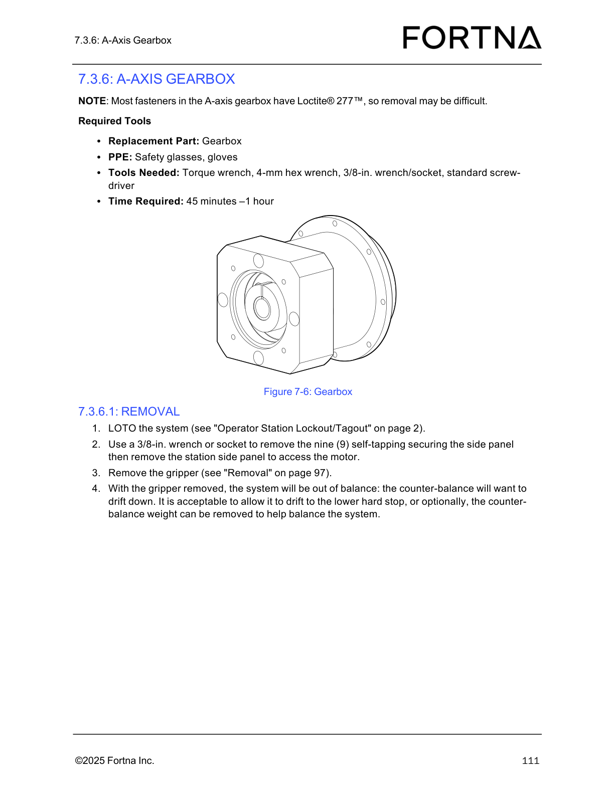

| Procedure ID | proc_remove_a_axis_gearbox_loto_sidepanel_gripper_v1 |
|---|---|
| Title | Remove A-Axis Gearbox (LOTO, side panel access, gripper removal, counter-balance handling) |
| Procedure Type | recovery |
| Primary Role | operator |
| Support Safe | Yes |
| Capability Tags | agv_physical_recovery |
| Access Surface | physical_floor |
| Audience Roles | operator |
| Failure Pattern Tags | None |
| Validation Status | needs_sme_review |
| Merge Status | source_finalized |
Safely remove the OptiSweep A-axis gearbox assembly by performing LOTO, removing the station side panel to access the motor, removing the gripper, and controlling counter-balance drift after gripper removal (either allow drift to the lower hard stop or remove the counter-balance weight).
Use when the OptiSweep A-axis gearbox must be removed and you need to follow the manual’s LOTO and disassembly sequence, including managing counter-balance drift risk after gripper removal.


Responsible role: operator
Instruction:
Perform LOTO on the system using the manual’s referenced "Operator Station Lockout/Tagout" procedure.
Expected result:
The system is in a locked-out/tagged-out state prior to side panel removal.
Stop or Escalate If:
Responsible role: operator
Instruction:
Using a 3/8-in. wrench or socket, remove the nine (9) self-tapping securing the side panel, then remove the station side panel to access the motor.
Expected result:
The station side panel is removed and the motor access area is exposed.
Stop or Escalate If:
Responsible role: operator
Instruction:
Remove the gripper (manual cross-reference: "Removal" on page 97).
Expected result:
The gripper is removed.
Stop or Escalate If:
Responsible role: operator
Instruction:
After gripper removal, allow the counter-balance to drift down to the lower hard stop OR remove the counter-balance weight to help balance the system.
Expected result:
Counter-balance drift is controlled: either it reaches the lower hard stop or the counter-balance weight is removed to balance the system.
Stop or Escalate If:
Responsible role: operator
Instruction:
Remove the gearbox without removing the motor; if fastener access requires it, remove the motor (manual cross-reference: "Motor Removal" on page 106).
Expected result:
You are positioned to remove the gearbox mounting fasteners; motor removal is only performed if required for fastener access.
Stop or Escalate If:
Responsible role: operator
Instruction:
Remove the eight (8) M5x18 socket-head screws mounting the gearbox to the carriage.
Expected result:
All eight (8) M5x18 socket-head screws are removed and the gearbox is no longer secured to the carriage.
Stop or Escalate If:
Responsible role: operator
Instruction:
Remove the gearbox.
Expected result:
The gearbox is removed from the carriage.
Stop or Escalate If: